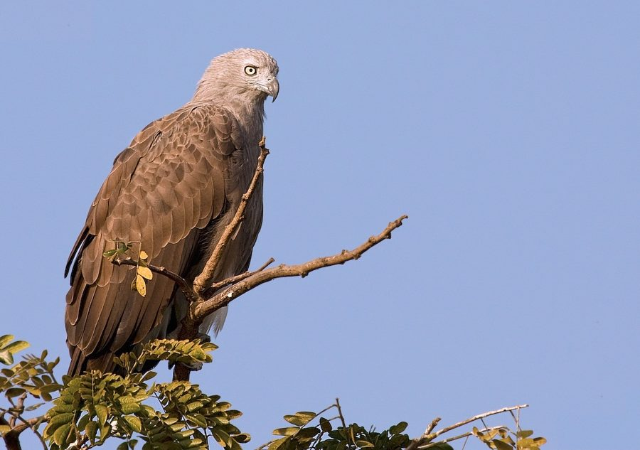

लेसर फिश-ईगलLesser Fish Eagle
Icthyophaga humilis · Accipitridae · BRD-0345

- Scientific name वैज्ञानिक नाम
- Icthyophaga humilis (S.Müller & Schlegel, 1841)
- Family कुल
- Accipitridae
- Hindi हिंदी
- लेसर फिश-ईगल
- Local names स्थानीय नाम
- lesser fish eagle
- Status here यहाँ की स्थिति
- native
- Movement आवागमन
- Resident, here all year
- Known from कहाँ दर्ज
- Others have published records from the wider Awadh–Purvanchal plain, none yet from Basti–Ayodhya अवध–पूर्वांचल से दूसरों के प्रकाशित अभिलेख, बस्ती–अयोध्या से अभी नहीं
- IUCN IUCN
- NT
- Review समीक्षा
- not yet reviewed
When to look कब देखें
Present all year. साल भर मौजूद।
Tell it apart from इनसे अलग पहचानें
लेसर फिश-ईगल / Lesser Fish Eagle
Icthyophaga humilis (S.Müller & Schlegel, 1841) — Accipitridae
लेसर फिश-ईगल — हिमालय की तलहटी की नदियों के किनारे रहने वाला मछलीमार गरुड़; बेकर (1928) के अनुसार सर्दियों में यह दक्षिण में लखनऊ तक देखा गया है। इसका सिर धूसर, पीठ और पंख गहरे भूरे और पेट का निचला भाग सफेद होता है; बीच के पूंछ-पंख भूरे होते हैं और बगल के पंखों का निचला भाग सफेद-भूरा चित्तीदार। आईयूसीएन रेड लिस्ट में यह निकट संकटग्रस्त (NT) है।
Quick Identification त्वरित पहचान
| Feature | Description | |
|---|---|---|
| Habit | Medium-sized, forest-dwelling fish eagle of fast-flowing forested rivers and streams | |
| Size | Medium-sized eagle, noticeably smaller and more compact than a [[pallas_fish_eagle | Pallas's Fish Eagle]] |
| Head & Breast | Ashy brownish-grey head, neck, and breast | |
| Underparts | Brown breast; abdomen, vent and thighs white (as in I. ichthyaetus, Baker 1928, p. 115) | |
| Tail | Dark brown central tail-feathers with pale tip and blackish subterminal band; lateral feathers mottled white and brown on basal two-thirds (Baker 1928, p. 116) | |
| Eyes & Feet | Bright golden-yellow irises; soles densely covered with little spicules (Baker 1928, pp. 114–115) | |
| Wings | Broad, rounded dark brown wings |
Field tip: Look along tree-lined, fast-flowing rivers for a grey-headed eagle with a pure white belly and tail with blackish subterminal band (Baker 1928).
हिंदी:
इसका सिर और छाती स्लेटी रंग की होती है, निचला पेट सफेद होता है और पूंछ पूरी तरह भूरी होती है।
Morphology आकारिकी
Measurements as given by Baker (1928):
| Measurement | Range |
|---|---|
| Wing, Tail, Tarsus & Culmen | Wing 435 to 495 mm. ; tail 223 to 248 mm. ; tarsus 78 to 91 mm. ; culmen 40 to 46 mm. (Baker 1928 as Ichthyophaga humilis plumbeus) |
The Lesser Fish Eagle is a compact, robust eagle well adapted for riverine hunting. The adult plumage features an ashy-grey or brownish-grey head, neck, and upper breast. The back, scapulars, and wings are dark earth-brown, while the lower breast shades into white, with the abdomen, vent, and under tail-coverts white (as in I. ichthyaetus, Baker 1928, p. 115).
The plumage of the northern race plumbeus is similar to the nominate I. humilis but larger, with soft parts as in I. ichthyaetus (Baker 1928, pp. 116–117). The central tail-feathers are dark brown with a pale tip and a broad blackish subterminal band; lateral tail-feathers are mottled white and brown on the basal two-thirds or more, though in very old birds the white almost disappears (Baker 1928, p. 116).
Soft parts (I. ichthyaetus, Baker 1928, p. 115): "Iris bright golden yellow ... bill dark horny-brown, the base bluish-plumbeous; the cere brown." Legs and feet are yellowish-white or dull white, with rough spicules on the soles.
Vocalisations. Stuart Baker (1928, p. 118) noted: "sometimes extremely noisy on moonlight nights during the breeding-season."
हिंदी:
बेकर (1928) के अनुसार इसके पंख 435 से 495 मिमी, पूंछ 223 से 248 मिमी, टार्सस 78 से 91 मिमी और कल्मेन 40 से 46 मिमी होता है। इसकी आंखें चमकीली सुनहरी पीली, चोंच का आधार नीलापन लिए स्लेटी और चोंच का आधार (cere) भूरा होता है।
Behaviour & Ecology व्यवहार और पारिस्थितिकी
Stuart Baker (1928, pp. 117–118) noted: "Except that this bird keeps almost entirely to the hills its habits are similar to those of the Large Grey-headed Fishing-Eagle. In Assam and Burma it is more definitely a forest-bird." Feeding almost entirely on fish and reptiles is recorded for the nominate race (Baker 1928, p. 117).
हिंदी:
बेकर (1928) के अनुसार यह पहाड़ी और वन क्षेत्रों की नदियों पर रहता है तथा इसका मुख्य आहार मछलियां और सरीसृप हैं।
Life Cycle / Phenology जीवन चक्र
Stuart Baker (1928, pp. 117–118) described the nesting: "The eggs, two or three in number, only vary from those of I. i. ichthyaetus in being smaller." Breeding occurs from January to April in large stick nests built high in tall trees along river banks.
हिंदी:
बेकर (1928) के अनुसार यह जनवरी से अप्रैल के दौरान नदी किनारे के पेड़ों पर घोंसला बनाता है और इसमें दो या तीन सफेद अंडे दिए जाते हैं।
Host Plants or Prey आहार
Stuart Baker (1928, p. 117) recorded that it feeds almost entirely on fish and reptiles. No source opened for this atlas names specific prey species.
हिंदी:
बेकर (1928) के अनुसार इसका आहार लगभग पूरी तरह से मछलियों और सरीसृपों पर आधारित है।
Predators / Natural Enemies शत्रु
No source opened for this atlas names a specific predator of this bird.
हिंदी:
इस एटलस के लिए खोले गए किसी भी स्रोत में इस पक्षी के किसी विशिष्ट शिकारी का नाम नहीं है।
Agricultural / Human Relevance कृषि प्रासंगिकता
No source opened for this atlas describes this bird's dealings with people. Protected under the Wildlife (Protection) Act, 1972.
हिंदी:
इस एटलस के लिए खोले गए किसी भी स्रोत में लोगों के साथ इस पक्षी के व्यवहार या संबंधों का विवरण नहीं है। यह वन्यजीव (संरक्षण) अधिनियम, 1972 के तहत संरक्षित है।
Expected Locally स्थानीय रूप से अपेक्षित
Not a field record. Written from published accounts for eastern Uttar Pradesh. No confirmed local sighting yet — if you have seen it, that is what the atlas needs.
अभी तक स्थानीय पुष्टि नहीं। यह विवरण प्रकाशित स्रोतों से है, किसी अवलोकन से नहीं।
GBIF holds published records from the wider Awadh–Purvanchal plain, none yet from Basti–Ayodhya.
A first record would be a photograph of the bird with place and date, sent through the About page.
Distribution वितरण
Stuart Baker (1928, p. 117) recorded the distribution: "Sub-Himalayas from Kumaon and Kashmir to Eastern Assam and Upper Burma. In Winter it has occurred as far South as Lucknow and wanders into the plains below the hills."
In Uttar Pradesh, GBIF holds published records from Lakhimpur Kheri, Lucknow, and Shravasti.
हिंदी:
बेकर (1928) के अनुसार इसका विस्तार कुमाऊं व कश्मीर से असम और बर्मा तक है; सर्दियों में यह लखनऊ तक आ जाता है। उत्तर प्रदेश में जीबीआईएफ के रिकॉर्ड लखीमपुर खीरी, लखनऊ और श्रावस्ती से हैं।
Research Questions शोध प्रश्न
- Does the Lesser Fish Eagle maintain breeding territories along forested rivers of the Suhelwa and Dudhwa wildlife complexes? / क्या सुहेलवा और दुधवा के वन क्षेत्रों में बहने वाली नदियों पर इस गरुड़ के प्रजनन क्षेत्र सक्रिय हैं?
- How does river siltation and dam construction affect the clarity of water and hunting efficiency of this visual fish hunter? / नदियों में गाद जमने और बांधों के बनने से पानी की स्वच्छता और इसके शिकार पर क्या असर पड़ता है?
- What is the extent of seasonal wandering southwards into the Gangetic floodplain during the winter months?
- Are riparian forest buffer corridors sufficient to support active nesting trees outside core protected areas?
- Can local forest rangers and eco-guides monitor river stretches for active nests during the dry spring season? (Field workers can map perches and document calls during the breeding season.)
Similar Species मिलती-जुलती प्रजातियाँ
| Species | How to tell apart | हिंदी | |
|---|---|---|---|
| [[grey_headed_fish_eagle | Grey-headed Fish Eagle]] (Icthyophaga ichthyaetus) | Larger size, basal two-thirds of tail pure white with a broad dark terminal band | मधुया |
| [[osprey | Osprey]] (Pandion haliaetus) | Much smaller, contrasting white underparts with dark breast band and dark eye-stripe | मछलीमार |
| [[pallas_fish_eagle | Pallas's Fish Eagle]] (Haliaeetus leucoryphus) | Much larger build, pale buff-whitish hood, and broad white band across the middle of the tail | मछरंग |
Field rule: The combination of an ashy-grey head and breast, pure white lower belly, and tail pattern with dark brown central feathers and mottled lateral feathers distinguishes the Lesser Fish Eagle (Baker 1928).
हिंदी:
मछरंग का आकार बहुत बड़ा होता है और पूंछ पर सफेद पट्टी होती है; लेसर फिश-ईगल का पेट सफेद और पूंछ के मध्य पंख गहरे भूरे तथा किनारे के पंख चितकबरे होते हैं।
Taxonomy & Classification वर्गीकरण
Original description. Described by Salomon Müller and Hermann Schlegel in 1841 in Verhandelingen over de Natuurlijke Geschiedenis der Nederlandsche Overzeesche Bezittingen (Zoologie, Vogels, p. 47), under the basionym Falco humilis. The type locality is Sumatra.
Synonyms and historical names. Stuart Baker (1928, p. 117) treated the northern Indian population under the subspecies Ichthyophaga humilis plumbeus (Himalayan Grey-headed Fishing-Eagle), citing Jerdon's Polioaetus plumbeus.
Subspecies. The northern Indian subcontinent population is assigned to the subspecies Icthyophaga humilis plumbeus (Jerdon, 1871), distinguished by its larger size from the nominate Sundaic race.
Family and order placement. Order Accipitriformes (hawks and eagles); family Accipitridae (accipitrid raptors); genus Icthyophaga.
IUCN status rationale. Evaluated as Near Threatened (NT) by the IUCN Red List (BirdLife International 2016).
हिंदी:
मुलर और श्लेगल ने 1841 में इसका वर्णन किया था। बेकर ने इसे Ichthyophaga humilis plumbeus के रूप में दर्ज किया था। यह एक्सीपिट्रिडी कुल का सदस्य है और निकट संकटग्रस्त (NT) है।
Photo Gallery फोटो गैलरी
No photos yet — add field photos to media/species/lesser_fish_eagle/ and run node scripts/sync_photos.js.
Photos needed आवश्यक फोटो
- [ ] Adult perched on branch over river showing grey breast and white belly (नदी के ऊपर डाल पर बैठा वयस्क)
- [ ] In-flight view showing plain dark tail and rounded wings (उड़ते हुए पूंछ और पंखों का दृश्य)
References संदर्भ
- Müller, S. & Schlegel, H. (1841). Verhandelingen over de Natuurlijke Geschiedenis der Nederlandsche Overzeesche Bezittingen. Zoologie, Vogels. Leiden, p. 47 (as Falco humilis).
- Baker, E. C. S. (1928). The Fauna of British India, Including Ceylon and Burma. Birds. Vol. 5. Taylor & Francis, London, p. 117 (as Ichthyophaga humilis plumbeus).
- Ali, S. & Ripley, S. D. (1987). Compact Handbook of the Birds of India and Pakistan. Oxford University Press, New Delhi.
- Grimmett, R., Inskipp, C. & Inskipp, T. (2011). Birds of the Indian Subcontinent. 2nd ed. Christopher Helm, London.
- BirdLife International (2016). Icthyophaga humilis. The IUCN Red List of Threatened Species 2016: e.T22695156A93493324. doi:10.2305/iucn.uk.2016-3.rlts.t22695156a93493324.en
- GBIF Occurrence Data — Icthyophaga humilis, India (2025).
Source file: species/fauna/birds/lesser_fish_eagle.md